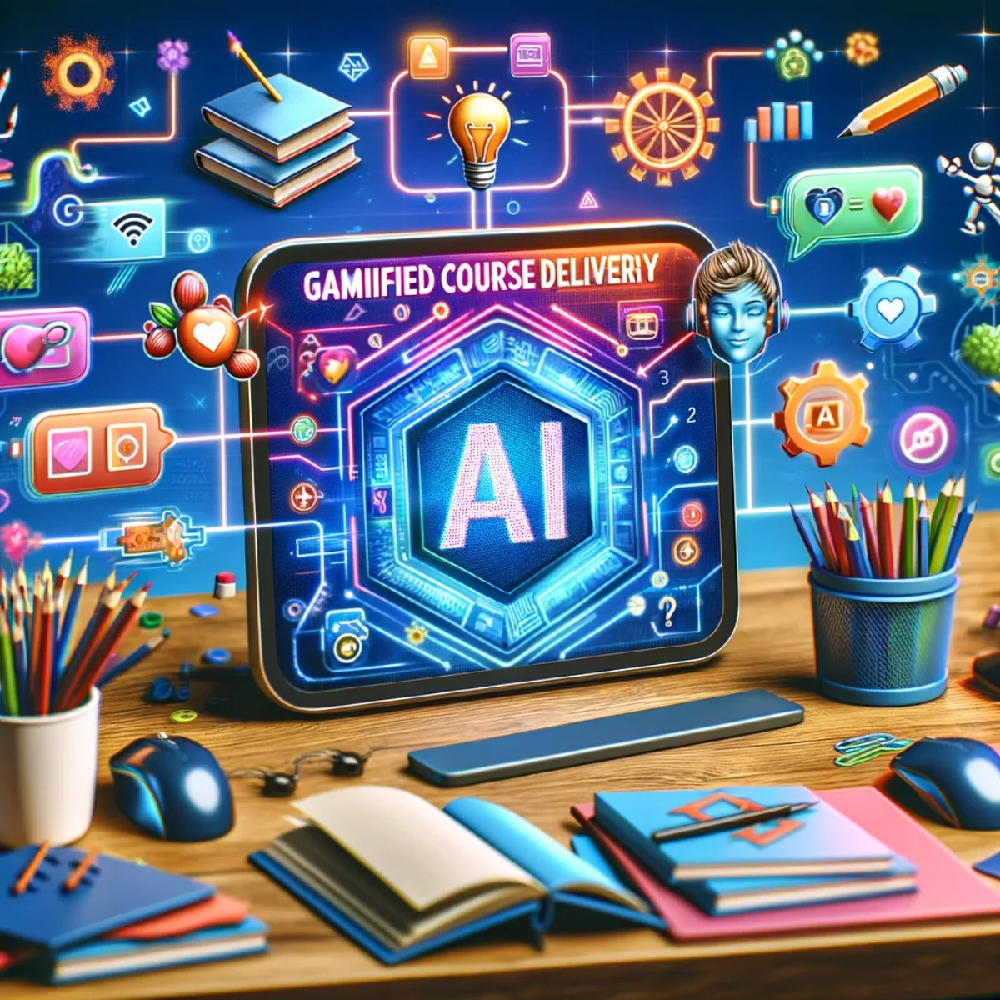
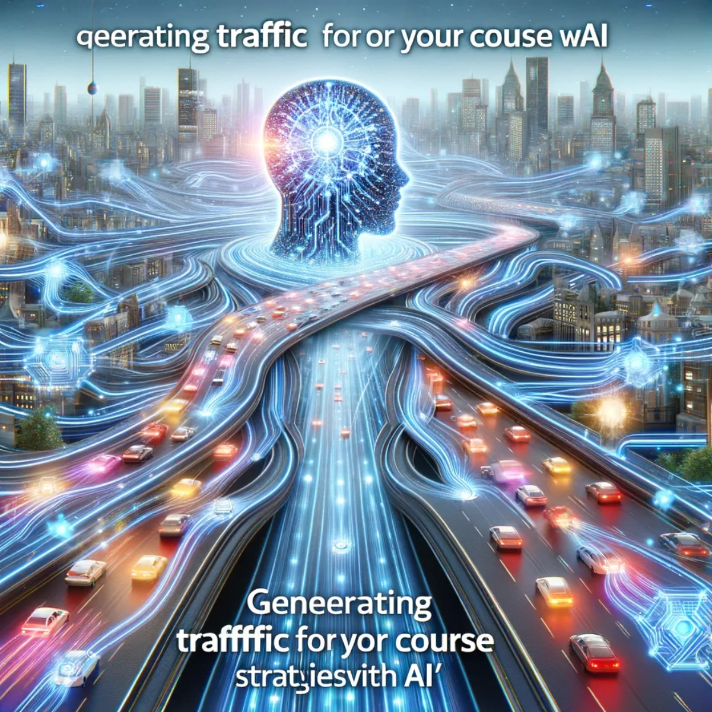

Courses / Behind the scenes
Course Creation
Build your own online course with AI alongside you, from the first spark of a topic to the finished thing you own: custom to you, and yours to keep.
Find your focus
Choosing a topic
Every course starts with a topic that's genuinely yours. AI works as a thinking partner here, drawing on a vast well of knowledge to help you find the subjects where your passion meets a real need out there. You stay in the driver's seat: the topic that excites you, that you know something about, that your future learners will care about. AI just helps you see the ground more clearly before you choose.
Dive deep, stand apart
Researching the topic
Once you've chosen, go deep. With AI by your side you can survey your chosen topic and understand what already exists, spotting gaps in the field and openings no one else has taken. This is where your course earns its own voice: your unique insights and perspective woven through, so it stands apart rather than echoing what's already out there. The research serves your point of view, not a template.
Your ideas, made real
Generating content
Now the making. AI helps you turn your ideas into rich, engaging material without the blank-page struggle: lessons, presentations, interactive pieces, all shaped by you and drafted with intelligence at your elbow. From clear text to vivid visuals and video, you compose the course you have in mind, tailored to the way you want people to learn. The output is yours; AI is the instrument, not the author.
Structure meets creativity
Organising content
A good course is a well-planned journey, not a pile of files. Rather than renting someone else's course builder, you shape your own tools for arranging what you've made into a coherent, intentional path. Categorise modules, order lessons, place your multimedia where it lands best, and see the whole shape at a glance. Clarity and precision, built the way you think, so your teaching vision becomes something learners can actually walk through.

Level up learning
Gamified course delivery
Learning sticks when it feels like an adventure. You can build delivery where each lesson opens something new, every quiz is a challenge worth taking, and progress unlocks the next step. Because it's your own system, you decide how it adapts to each learner's pace and style, turning study into a quest for growth rather than a chore. The mechanics are yours to tune, and they stay tuned to how you want to teach.

Draw the right minds
Generating traffic
A course only matters once people find it. AI helps you navigate the wider digital landscape and draw the right learners toward what you've built: thoughtful marketing, search visibility, content that recommends itself. You grow a genuine community of people who want what you're offering, on your own terms. The reach you build belongs to you and your course, not to a platform holding your audience hostage.
Expand your reach, effortlessly
Social media automation
Getting the word out shouldn't eat your week. You can assemble your own set of tools to streamline how your course shows up across social channels: scheduling, affiliate links, steady presence, all running with light effort. Every post becomes a chance to connect, every interaction a step toward the audience you're growing. It's automation you own and control, shaped to your voice, rather than a subscription that shapes you to fit it.
Value beyond price
Charging a fee or giving for free?
At some point you face an honest question: charge for your course, or give it away? Both are real choices. This is where you weigh monetising your work against the reach and goodwill of free access, and decide what fits the value you're offering, your mission, and what you need the course to do for you. There's no single right answer, only the one that's true to why you made it. It's your course, so it's your call.
Everywhere learning happens
Course syndication
Your course can live in more than one place. Syndication is about finding the right spots to share it, from well-known learning platforms to the smaller niche communities where your audience already gathers. You choose where it goes and how it travels, widening its reach without giving up ownership of it. The course stays yours at the centre; syndication simply carries it out to more of the minds looking for exactly what you teach.
Tomorrow's tutors, today
Training AI agents on courses
Here's where your course becomes something more than lessons. Train an AI agent on the material you've made, and you have a tutor that carries your knowledge: one that adapts, anticipates, and responds to each learner's needs. You're not only teaching students; you're building an intelligent companion out of your own expertise, one that stays yours. Human knowledge and AI working together, so every lesson reaches further than you could alone.
Keep exploring